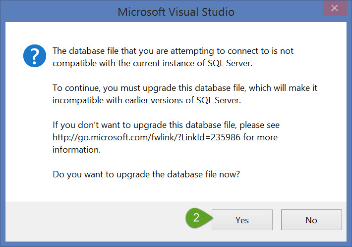
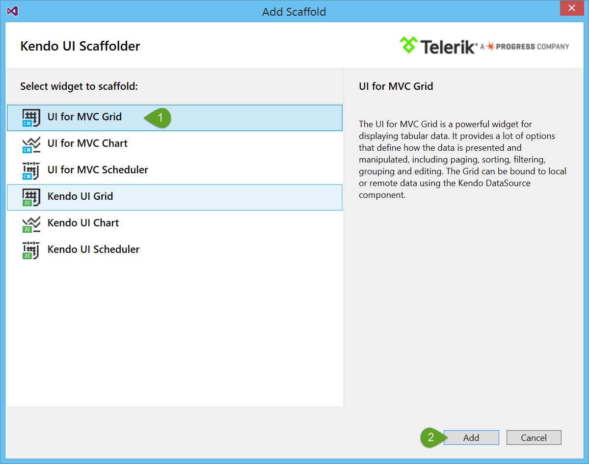

Introduction
Welcome to the UI for ASP.NET MVC quick-start guide. In this guided tutorial you'll learn how to install, configure, and utilize UI for ASP.NET MVC to build a rich single page dashboard application that works beautifully on any device.
What you're building
This guide will walk you through building Team Efficiency Dashboard, a single page app that does the following things:
- Connects rich chart visualizations and grids to a SQL data source
- Provides an interactive master/detail dashboard with filtering, sorting and exporting
- Responds to any device size including: mobile, tablet and desktop
If you follow along until the end, here is what the finished app will look like.

And here is what the app will look like on mobile.

UI for ASP.NET MVC vs Kendo UI widgets
From client-side point of view, the vanilla HTML/JavaScript Kendo UI widgets and the rendered UI for ASP.NET MVC represent the same thing and provide the same capabilities. However, the UI for ASP.NET MVC wrappers provide additional capabilities for use with ASP.NET MVC and tooling for VisualStudio. Refer to the documentation for a complete feature comparison.
Important Resources
Getting up and running
In this chapter you're going to start with the basics, including starting a new project, adding UI for MVC to your project, and installing the quick start template.
Create a new MVC project
UI for ASP.NET MVC can easily be added to an existing ASP.NET MVC project in just a few clicks using VisualStudio.
Start by creating a new ASP.NET MVC project. You'll use this project throughout the rest of this tutorial to build your application.
Exercise: Create a new MVC project
Click File > New Project
In the New Project dialog choose the ASP.NET Web Application template by expanding the "Templates" tree to Templates > Visual C# > Web

Give the application a name (ex: MyQuickStartApp)
Click OK to continue

In the New ASP.NET Project dialog, choose MVC from the 4.6 template selection
Click OK to finish
Install the quick start boilerplate
With the new project created, it's time to start building your app. For this guide, we've scaffolded out a boilerplate project to act as a starting point for the Team Efficiency Dashboard.
The boilerplate has an HTML page, the Northwind database and some server-side code you may find in a typical MVC project.
Exercise: Install the quick start boilerplate
Using the package manager console, run the following command
PM> Install-Package KendoQsBoilerplate
Alternatively, you can use the package manager GUI
From the Solution Explorer right-click References, then choose Manage NuGet Packages
Search for KendoQsBoilerplate

Click Install to continue
When the package installs you may be prompted to accept a license agreement for the NortwindDB, click I Accept to continue
It is normal for the quick start boiler plate to overwrite existing files, when prompted with a file conflict choose Yes to All
With the boilerplate installed, take a moment to run the application. If all went well, you should see something like this:

Convert to Telerik Application
At this point, you have the wire frame for a basic MVC application. Next you will be adding the UI for ASP.NET MVC to the application by using the convert to Telerik application tooling. When an application is converted to a Telerik application, all required HTML, CSS, JavaScript and .DLL libraries are added. This is the first step you would take to upgrade a new or existing MVC project to use Kendo.
Exercise: Convert to a Telerik Application
Stop the application if it is already running.
In the Solution Explorer right-click on the project name and select Telerik UI for ASP.NET MVC > Convert to Telerik Application. This will launch the Project Configuration Wizard, from here we can choose settings for our Telerik project.

For this tutorial your project will use CDN support. This means all Kendo resources are served from Telerik's content delivery network (CDN) versus relying on your server for the assets. Mark the box Use CDN support and click Next to continue.

Since the boilerplate is designed with Bootstrap, choose Bootstrap from themes select box so the theme matches the current look of the boilerplate. You'll change the theme later when you're ready to customize the look of the application.

Open \Views\Shared_Layout.cshtml find and remove the following script bundle @Scripts.Render("~/bundles/modernizr"). This script is included with the Kendo assets.
Next, find the CSS bundle @Styles.Render("~/Content/css") and move it just above the closing head tag </head> this will make sure that any custom styles are applied when you customize the application.
The final code of the head section should look like this:
<meta charset="utf-8" />
<meta name="viewport" content="width=device-width, initial-scale=1.0">
<title>@ViewBag.Title - UI for MVC / Kendo Quick Start Guide</title>
<link href="http://cdn.kendostatic.com/2015.3.1111/styles/kendo.common-bootstrap.min.css" rel="stylesheet" type="text/css" />
<link href="http://cdn.kendostatic.com/2015.3.1111/styles/kendo.mobile.all.min.css" rel="stylesheet" type="text/css" />
<link href="http://cdn.kendostatic.com/2015.3.1111/styles/kendo.dataviz.min.css" rel="stylesheet" type="text/css" />
<link href="http://cdn.kendostatic.com/2015.3.1111/styles/kendo.bootstrap.min.css" rel="stylesheet" type="text/css" />
<link href="http://cdn.kendostatic.com/2015.3.1111/styles/kendo.dataviz.bootstrap.min.css" rel="stylesheet" type="text/css" />
<script src="http://cdn.kendostatic.com/2015.3.1111/js/jquery.min.js"></script>
<script src="http://cdn.kendostatic.com/2015.3.1111/js/jszip.min.js"></script>
<script src="http://cdn.kendostatic.com/2015.3.1111/js/kendo.all.min.js"></script>
<script src="http://cdn.kendostatic.com/2015.3.1111/js/kendo.aspnetmvc.min.js"></script>
<script src="@Url.Content("~/Scripts/kendo.modernizr.custom.js")"></script>
@Styles.Render("~/Content/css")
Tip: Because the Convert to Telerik application, Upgrade Project, or Configure Project wizards modify the
_Layout.cshtmlfile, be sure to check position of any custom CSS declarations afterward.
Now that your app is ready for development, let's add some simple input components to create a nice user experience.
Input Controls
In this chapter you'll learn how to add Kendo UI components to your application. UI for MVC has powerful HTML Helpers that render Kendo UI components.
Kendo Helper Overview
Server-side wrappers
Telerik UI for ASP.NET MVC is a set of server-side wrappers. A server-wrapper does the following.
- Allows the developer to configure a Kendo UI widget via C# or VB.NET code - set its value, data source etc.
- Renders the HTML and JavaScript needed to initialize the Kendo UI widget. The widget options propagate to the client-side via the widget initialization script.

Configuration
The Kendo HtmlHelper exposes all Kendo UI server wrappers.

Widget options
The widget options are exposed via fluent interface.

Below is an example of how a Numeric Text Box input is created:
@(Html.Kendo().NumericTextBox()
.Name("name") // set the name of the NumericTextBox
.Value(10) //set the value
.Spinners(false) // disable the spinners
)
Adding a Kendo DatePicker
Let's open the Index.cshtml page under the folder views/home/. The Index.cshtml page is where most of the application's UI lives. This page currently contains basic HTML inputs to collect date input from the user. To provide a better user experience, replace the standard HTML inputs with Kendo date picker controls. The Kendo date picker controls offer users a fly out calendar to choose a desired date.
Note: The Kendo date picker control is touch and mouse friendly. No additional code is necessary to support tablets and phones.
Exercise: Replace StatsFrom and StatsTo TextBoxes with Kendo Date Pickers
Open Views/Home/Index.cshtml
Find the StatsFrom text box
<!-- Stats From Date Picker -->
@Html.TextBox("StatsFrom", new DateTime(1996, 1, 1))
Replace the code with a Kendo date picker
<!-- Stats From Date Picker -->
@(Html.Kendo().DatePicker()
.Name("StatsFrom")
.Value(new DateTime(1996, 1, 1))
)
Find the StatsTo text box
<!-- Stats To Date Picker -->
@Html.TextBox("StatsTo", new DateTime(1996, 1, 1))
Replace the code with a Kendo date picker
<!-- Stats To Date Picker -->
@(Html.Kendo().DatePicker()
.Name("StatsTo")
.Value(new DateTime(1998, 8, 1))
)
The Kendo HTML helper's fluent interface let you configure their behavior and appearance. The code you just added uses the following properties:
- Name: Sets the rendered HTML element's id property.
- Value: Sets a default selected date value for the date picker
After you run your app with this change, you will see a calendar icon in the Stats from field. Click or tap the icon to reveal the date picker:

Scaffolding
In this chapter, you'll learn how to add leverage UI for MVC's scaffolding capabilities. One feature that MVC developers are quite used to is scaffolding. Visual-Studio-powered MVC scaffolding is a code generation framework that allows you to hook up your model to a controller and render views that are strongly typed, among other things. Since the scaffolding is simply a code generation tool, you are free to change any of the code that it generated.
Upgrade the database
A copy of the Nortwind database in included with the Kendo Quick Start Boilerplate. Before you begin scaffolding make sure the Nortwind database is upgraded. Having a working connection to the database is needed for the scaffolding wizard to work properly.
Note: Upgrading the database is only necessary for this guide because the database supplied must support multiple versions of SQL therefore we chose the lowest database version possible.
Exercise: Upgrade the Northwind Database
Note: If you do not have a SQL Server instance installed on your machine, you may need to install SQL Server Express Edition from Microsoft. You can download the free installer here.
Using Visual Studio's Server Explorer, expand DataConnections and right-click NortwindDB > Modify Connection.

Next, click OK.

Finally, click Yes to complete the upgrade.

Once the upgrade is complete, expand the Northwind Database Tables to verify connectivity.

With the database upgraded use the scaffolding wizard to create an interactive grid view.
UI for MVC Scaffolding wizard
The scaffolding wizard will aid you in creating the view by providing point a click configuration screen.Use the scaffolding wizard to create an interactive Kendo Grid view of invoices for the Team Efficiency Dashboard. By enabling grid features like: sorting, paging and exporting users will be able to analyze and share data in a familiar way.
Exercise: Scaffold a Grid view of invoices
Start the scaffolding wizard by right-clicking Controllers > Add > New Scaffolded Item

Choose the Kendo UI Scaffolder and click Add to continue
Notice the Scaffolder is capable of creating Grid, Chart, and Scheduler views for both C# and JavaScript. For this guide you'll be using the UI for MVC Grid scaffolding option. Choose UI for MVC Grid and click Add to continue.

From MVC Grid scaffolding dialog, the Grid's model options, grid options and events are defined. The Model Options control the following settings:
- Controller Name - The name of the controller created by the scaffolder.
- View Name - The name of the view created, which will display the scaffolded grid.
- Model Class - The model the scaffolder will use to build the view.
- Data Context Class - The Entity Framework DbContext used to connect the view to the data.
Define the Grid's model options using the following values:
- Controller Name: InvoiceController
- View Name: Index
- Model Class: Invoice
- Data Context Class: NorthwindDBContext

The Grid Options control what features are scaffolded & enabled on the grid including:
- DataSource Type - Ajax, Server or WebApi.
- Editable - Enable the editing, configure the edit mode (InLine, InCell or PopUp) and the operations to be included (Create, Update, Destroy).
- Filterable - Enable the filtering of the Grid and select the filter mode.
- Column Menu - Enable the column menu.
- Navigatable - Enable the keyboard navigation.
- Pageable - Enable the paging of the Grid.
- Reorderable - Enable the column reording.
- Scrollable - Enable the scrolling of the Grid table.
- Selectable - Enable the selection and specify the selection mode and type.
- Sortable - Enable the sorting and specify the sorting mode.
- Excel Export - Enable the Excel export functionality.
- PDF Export - Enable the PDF export functionality.
Define the Grid's options using the following values:
- [ ] Scrollable
- [x] Sortable
- [x] Pageable
- [x] Excel Export
- [x] PDF Export
Click Add to continue and create the scaffolded items.
The scaffolder will create the following files:
Controllers/InvoiceController.cs- This controller has the actions for the features selected in the scaffolding wizard.Indexreturns the viewInvoices_Read- gets all invoices from the database and returns a JSON formatted DataSourceRequest object. The DataSourceRequest will contain the current grid request information - page, sort, group and filter.Excel_Export_Save- creates an XLS exported File result.Pdf_Export_Save- creates a PDF exported File result.
Views/Invoice/Index.cshtml- This view contains the markup and HTML helper responsible for rendering the Grid control.
Run the application and navigate to /Invoice/index to see the generated grid control. You should see the following output:

Kendo Grid
In this chapter you will modify the scaffolded Grid code to further customize the Grid's appearance and incorporate the Grid into the dashboard view.
Configuring Kendo Grid options
Change the Grid's ID from "grid" to "EmployeeSales"
Find @(Html.Kendo().Grid
() .Name("grid") ...)
Update @{ Layout = null;} @(Html.Kendo().Grid
() .Name("grid") ...)
Update @{ Layout = null;} @(Html.Kendo().Grid
() .Name("EmployeeSales") ...)
View Controllers/InvoiceController.cs
Add Grid to Index.cshtml
Find
@Html.Ipsum().table(5, 3, "d,t,n", new { @class = "table table-striped table-bordered" })
Replace @Html.Action("Index","Invoice")
Run Project
Explore Sorting, Paging, and Exporting
Apply Date Format
Open Invoice/Index.cshtml
Find columns.Bound(c => c.OrderDate);
Modify columns.Bound(c => c.OrderDate).Format("{0:MM/dd/yyyy}");
Refresh page
Kendo ListView
In this chapter...
This ListView control
- Stop project if running
Open Home/Index.cshtml
Find
Remove ul placeholder
Add
@(Html.Kendo().ListView
() .Name("EmployeesList") .ClientTemplateId("EmployeeItemTemplate") .TagName("ul") .DataSource(dataSource => { dataSource.Read(read => read.Action("EmployeesList_Read", "Home")); dataSource.PageSize(9); }) .Selectable(s => s.Mode(ListViewSelectionMode.Single)))
Discuss Kendo Templates
Add Template
Find
Add
Add Read Action
Open Controllers/HomeController.cs
Add to top of code
using Kendo.Mvc.UI; using Kendo.Mvc.Extensions;
Add to Class
public ActionResult EmployeesList_Read([DataSourceRequest]DataSourceRequest request)
{
var employees = db.Employees.OrderBy(e => e.FirstName);
return Json(employees.ToDataSourceResult(request, ModelState), JsonRequestBehavior.AllowGet);
}
- Run and explore
Adding a list view
Kendo Templates
Client Side
In this chapter...
Working with client side events
Select the first employee when data is bound
Find
@(Html.Kendo().ListView
() ... .Selectable(s => s.Mode(ListViewSelectionMode.Single)))
Append
@(Html.Kendo().ListView<Employee>()
...
.Selectable(s => s.Mode(ListViewSelectionMode.Single))
.Events(e => e.DataBound("onListDataBound"))
)
Result
<!-- Employee List View -->
@(Html.Kendo().ListView<Employee>()
.Name("EmployeesList")
.ClientTemplateId("EmployeeItemTemplate")
.TagName("ul")
.DataSource(dataSource =>
{
dataSource.Read(read => read.Action("EmployeesList_Read", "Home"));
dataSource.PageSize(9);
})
.Selectable(s => s.Mode(ListViewSelectionMode.Single))
.Events(e => e.DataBound("onListDataBound"))
)
Add JavaScript
Find @section Scripts {
<script> //Custom Scripts </script>}
Add @section Scripts {
<script> //Custom Scripts function onListDataBound(e) { this.select($(".employee:first")); } </script>}
Refresh page
N. Kendo Datasource
- Get Selected Employee
Update Kendo Template
Find
@(Html.Kendo().ListView
() ... .Selectable(s => s.Mode(ListViewSelectionMode.Single)) .Events(e => e.DataBound("onListDataBound")))
Add
@(Html.Kendo().ListView<Employee>() ... .Selectable(s => s.Mode(ListViewSelectionMode.Single)) .Events(e => e.DataBound("onListDataBound")) .Change("onCriteriaChange")))
Find
...Add
Find
Add function getSelectedEmployee() {
var employeeList = $("#EmployeesList").data("kendoListView"), employee = employeeList.dataSource.getByUid(employeeList.select().attr("data-uid")); return employee;}
function updateEmployeeAvatar() {
var employee = getSelectedEmployee(), template = kendo.template($("#employeeAvatarTemplate").html()); //apply template $("#employee-about").html(template(employee));}
function onCriteriaChange() {
updateEmployeeAvatar();}
Refresh page
- Watch template update with selected list item
Kendo Datasource
In this chapter...
Working with the Kendo Datasource
Create a filter
Find
Add function getEmployeeFilter() {
var employee = getSelectedEmployee(), statsFrom = $("#StatsFrom").data("kendoDatePicker"), statsTo = $("#StatsTo").data("kendoDatePicker"); var filter = { employeeId: employee.EmployeeId, salesPerson: employee.FullName, statsFrom: statsFrom.value(), statsTo: statsTo.value() } return filter;}
function refreshGrid() {
var employeeSales = $("#EmployeeSales").data("kendoGrid"); employeeSales.dataSource.read();}
Find
@(Html.Kendo().Grid
() .Name("EmployeeSales") ... .Scrollable(scrollable => scrollable.Enabled(false)) .DataSource(dataSource => dataSource .Ajax() .Read(read => read.Action("Invoices_Read", "Invoice")) ))
Append @(Html.Kendo().Grid
() .Name("EmployeeSales") ... .Scrollable(scrollable => scrollable.Enabled(false)) .DataSource(dataSource => dataSource .Ajax() .Read(read => read.Action("Invoices_Read", "Invoice") .Data("getEmployeeFilter")) ) .AutoBind(false))
Find function onCriteriaChange() {
updateEmployeeAvatar();}
Append function onCriteriaChange() {
updateEmployeeAvatar(); refreshGrid();}
Apply filter on the controller action Controllers/InvoiceController.cs
Find public ActionResult Invoices_Read([DataSourceRequest]DataSourceRequest request) {
IQueryable<Invoice> invoices = db.Invoices; DataSourceResult result = invoices.ToDataSourceResult(request, invoice => new { OrderID = invoice.OrderID, CustomerName = invoice.CustomerName, OrderDate = invoice.OrderDate, ProductName = invoice.ProductName, UnitPrice = invoice.UnitPrice, Quantity = invoice.Quantity, Salesperson = invoice.Salesperson }); return Json(result);}
Append public ActionResult Invoices_Read([DataSourceRequest]DataSourceRequest request,
string salesPerson, DateTime statsFrom, DateTime statsTo){
var invoices = db.Invoices.Where(inv => inv.Salesperson == salesPerson) .Where(inv => inv.OrderDate >= statsFrom && inv.OrderDate <= statsTo); DataSourceResult result = invoices.ToDataSourceResult(request, invoice => new { OrderID = invoice.OrderID, CustomerName = invoice.CustomerName, OrderDate = invoice.OrderDate, ProductName = invoice.ProductName, UnitPrice = invoice.UnitPrice, Quantity = invoice.Quantity, Salesperson = invoice.Salesperson }); return Json(result);}
run project
inspect behavior list view and grid are in sync
update date pickers with client side event
Find @(Html.Kendo().DatePicker()
.Name("StatsFrom") .Value(new DateTime(1996, 1, 1)))
Append @(Html.Kendo().DatePicker()
.Name("StatsFrom") .Value(new DateTime(1996, 1, 1)) .Events(e => e.Change("onCriteriaChange")))
Find @(Html.Kendo().DatePicker()
.Name("StatsTo") .Value(new DateTime(1998, 8, 1)))
Append
@(Html.Kendo().DatePicker()
.Name("StatsTo")
.Value(new DateTime(1998, 8, 1))
.Events(e => e.Change("onCriteriaChange"))
)
- Save / Reload page
- Change date to see grid reload
Kendo Grid Ajax
In this chapter...
Creating a custom filter
Triggering a refresh from outside the grid
Kendo Charts
In this chapter...
Chart API
Monthly sales chart
Stop project
Under Views/Home add a new empty partial view _MontlySalesByEmployee.cshtml
Add @(Html.Kendo().Chart
() .Name("EmployeeAverageSales") .HtmlAttributes(new { style = "height:30px;" }) .Series(series => { series.Line(model => model.EmployeeSales) .Width(1.5) .Markers(m => m.Visible(false)) .Tooltip(t => t.Template("#=kendo.toString(value, 'c2')#")); }) .CategoryAxis(c => c .Date() .Categories(x => x.Date) .Visible(false) .MajorGridLines(m => m.Visible(false)) .MajorTicks(mT => mT.Visible(false)) ) .Legend(leg => leg.Visible(false)) .ValueAxis(val => val.Numeric() .Visible(false) .Labels(lab => lab.Visible(false)) .MajorGridLines(m => m.Visible(false)) .MajorTicks(mT => mT.Visible(false))) .DataSource(ds => ds .Aggregates(a => a.Add(s => s.EmployeeSales).Average()) .Read(read => read.Action("EmployeeAverageSales", "Home") .Data("getEmployeeFilter")) ) .AutoBind(false))
Create a controller action
open controllers/HomeController.cs
Add public ActionResult EmployeeAverageSales(
int employeeId, DateTime statsFrom, DateTime statsTo){
var result = EmployeeAverageSalesQuery(employeeId, statsFrom, statsTo); return Json(result, JsonRequestBehavior.AllowGet);}
-open views/home/index.cshtml
Find
<!-- Montly Sales Chart -->
@Html.Placehold(430, 120, "Chart")
Replace
<!-- Montly Sales Chart -->
@Html.Partial("_MontlySalesByEmployee")
Find
<script>
...
</script>
Add
function refreshEmployeeAverageSales() {
var employeeAverageSales = $("#EmployeeAverageSales").data("kendoChart");
employeeAverageSales.dataSource.read();
}
Find
function onCriteriaChange() {
updateEmployeeAvatar();
refreshGrid();
}
Append
function onCriteriaChange() {
updateEmployeeAvatar();
refreshGrid();
refreshEmployeeAverageSales();
}
- Run and inspect
Add Label
Find
Add function onAverageSalesDataBound(e) {
var label = $("#EmployeeAverageSalesLabel"), data = this.dataSource.aggregates() if (data.EmployeeSales) { label.text(kendo.toString(data.EmployeeSales.average, "c2")); } else { label.text(kendo.toString(0, "c2")); }}
Find @(Html.Kendo().Chart
() ... .AutoBind(false))
Append @(Html.Kendo().Chart
() ... .AutoBind(false) .Events(e => e.DataBound("onAverageSalesDataBound")))
Quarter to date sales chart
Stop project
Under Views/Home add a new empty partial view _QuarterToDateSales.cshtml
Add @(Html.Kendo().Chart
() .Name("EmployeeQuarterSales") .HtmlAttributes(new { style = "height:30px;" }) .Tooltip(false) .Series(series => { series.Bullet(m => m.Current, m => m.Target); }) .Legend(leg => leg.Visible(false)) .CategoryAxis(cat => cat.Labels(lab => lab.Visible(false)) .MajorGridLines(m => m.Visible(false)).Visible(false)) .ValueAxis(val => val.Numeric() .Labels(lab => lab.Visible(false)) .MajorGridLines(m => m.Visible(false)) .MajorTicks(mT => mT.Visible(false))) .DataSource(ds => ds .Read(read => read.Action("EmployeeQuarterSales", "Home") .Data("getEmployeeFilter")) ) .AutoBind(false))
Create a controller action
open controllers/HomeController.cs
Add public ActionResult EmployeeQuarterSales(int employeeId, DateTime statsTo) {
DateTime startDate = statsTo.AddMonths(-3); var result = EmployeeQuarterSalesQuery(employeeId, statsTo, startDate); return Json(result, JsonRequestBehavior.AllowGet);}
-open views/home/index.cshtml
Find
<!-- QTD Sales Chart -->
@Html.Placehold(430, 120, "Chart")
Replace
<!-- QTD Sales Chart -->
@Html.Partial("_QuarterToDateSales")
Find
<script>
...
</script>
Add
function refreshEmployeeQuarterSales() {
var employeeQuarterSales = $("#EmployeeQuarterSales").data("kendoChart");
employeeQuarterSales.dataSource.read();
}
Find
function onCriteriaChange() {
updateEmployeeAvatar();
refreshGrid();
refreshEmployeeAverageSales();
}
Append
function onCriteriaChange() {
updateEmployeeAvatar();
refreshGrid();
refreshEmployeeAverageSales();
refreshEmployeeQuarterSales();
}
- Run and inspect
Add Label
Find
Add
function onQuarterSalesDataBound(e) {
var data = this.dataSource.at(0);
$("#EmployeeQuarterSalesLabel").text(kendo.toString(data.Current, "c2"));
}
Find
@(Html.Kendo().Chart<QuickStart.Models.MonthlySalesByEmployeeViewModel>()
...
.AutoBind(false)
)
Append
@(Html.Kendo().Chart<QuickStart.Models.MonthlySalesByEmployeeViewModel>()
...
.AutoBind(false)
.Events(e => e.DataBound("onQuarterSalesDataBound"))
)
Go Responsive
In this chapter...
Responsive Grid
- Run project
- Inspect responsive behavior
- Modify grid for responsive
Open Views/Invoice/Index.cshtml
Find
.Columns(columns => {
columns.Bound(c => c.CustomerName); columns.Bound(c => c.OrderDate).Format("{0:MM/dd/yyyy}"); columns.Bound(c => c.ProductName); columns.Bound(c => c.UnitPrice); columns.Bound(c => c.Quantity); columns.Bound(c => c.Salesperson);})
Update .Columns(columns => {
columns.Bound(c => c.CustomerName).MinScreenWidth(900); columns.Bound(c => c.OrderDate).Format("{0:MM/dd/yyyy}"); columns.Bound(c => c.ProductName).MinScreenWidth(768); columns.Bound(c => c.UnitPrice); columns.Bound(c => c.Quantity);})
Refresh page and observe changes
Responsive Panel
Find
Update@(Html.Kendo().ResponsivePanel().Name("menuPanel").Breakpoint(768).Content( @Find Append )) Find@ViewBag.Title
@(Html.Kendo().Button() .Name("menuPanelOpen") .Content("menu") .Icon("hbars") .HtmlAttributes(new { @class = "k-rpanel-toggle" }) )Add CSS background
Open site.css
Find / Top Bar /
.hamburger {
position: absolute; top: 5px; left: 5px;}
Find / Side Panel /
Add #menuPanel {
background-color: #fff; padding: 10px; z-index: 3;}
Try responsive panel
Add close button
Find
@(Html.Kendo().ResponsivePanel().Name("menuPanel").Breakpoint(768).Content( @
<h3>Report Range</h3>Update @(Html.Kendo().ResponsivePanel().Name("menuPanel").Breakpoint(768).Content( @
<div class="text-right"> @(Html.Kendo().Button() .Name("menuPanelClose") .Content("Close") .Icon("close") .HtmlAttributes(new { @class = "k-rpanel-toggle" }) ) </div> <h3>Report Range</h3>Refresh and retry
Responsive Panel
Kendo Themes
In this chapter...
Theme change
- stop the project
- Right click on project > Telerik UI For MVC > Configure Project
- Set theme to Nova
Move @Styles.Render("~/Content/css") just above
Set Charts to Nova
Find @(Html.Kendo().Chart
() ... .AutoBind(false) .Events(e => e.DataBound("onQuarterSalesDataBound")))
Append @(Html.Kendo().Chart
() ... .AutoBind(false) .Events(e => e.DataBound("onQuarterSalesDataBound")) .Theme("nova"))
Find @(Html.Kendo().Chart
() ... .Events(e => e.DataBound("onAverageSalesDataBound")) .AutoBind(false))
Append @(Html.Kendo().Chart
() ... .AutoBind(false) .Events(e => e.DataBound("onAverageSalesDataBound")) .Theme("nova"))
Finishing the app theme
- Add CSS primer
Open Views/Shared/_Layout.cshtml
Find @Styles.Render("~/Content/css")
Update @Styles.Render("~/Content/css")
Refresh
open site-nova.css
Find / Side Panel - Employee List /
Append / Side Panel - Employee List / #menuPanel .k-widget.k-datepicker.k-header {
width: 100%;}
#employee-list > ul {
margin: 0 -10px;}
Find / Small Devices, Tablets, and Up / @media only screen and (min-width : 768px) {
}
Update / Small Devices, Tablets, and Up / @media only screen and (min-width : 768px) {
.app-wraper { position: relative; margin-left: -15px; }}